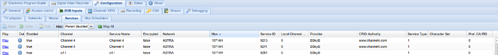

Configuration - DVB Inputs - Services
Services are automatically pulled from muxes and can be mapped to Channels.

Menu Bar
The menu bar items have the following functions:
Columns
The columns have the following functions:
Play : Opens a playlist (M3U of XSPF, depending on your startup options) to allow you to stream this service to another application, e.g. to watch a channel in VLC.
Details : Display details on this service, e.g. PID, streams, audio/video CODECs, languages, etc.
Enabled : Whether or not this service is available for use
Automatic Checking : Check for the service presence. If service is no longer broadcasted, this field will become as “Missing In PAT/SDT”. The check can be also disabled for given service using this column.
Priority : Define priority (range 0-10) for this service. The higher value means more preferred. Note that this value is _added_ to the input (tuner) priority. Take this in account when you set the input priorities.
Channel : The channel to which the service is mapped
Service Name : The name of the service, detected when the service was discovered
Encrypted : Whether or not the service is scrambled
Network : The network on which this service resides (i.e. whether it’s a cable channel or a terrestrial one)
Mux : The mux which carries this service. This is typically the frequency of the carrier signal in kHz, with polarisation (H or V) as applicable.
Service ID : A unique identifier for this service within this mux/transport stream.
Local Channel Number : Channel number as assigned by the broadcaster.
Provider : Any supplied provider string, e.g. where multiple broadcasters share a platform, such as for free-to-air and pay TV.
CRID Authority : The group responsible for the Content Reference Identifier for this service. This is effectively a URL/URI to an authoritative source for programme data (e.g. series link).
Service Type : The service type flag as defined by the DVB specifications (e.g. 0x02 = radio, 0x11 = MPEG2 HD TV, 0x19 = H.264 HD TV)
Pref. CA PID : The Preferred Conditional Access Packet Identifier. Used for decrypting scrambled streams.
Lock Pref. CA PID : The locking mechanism selection for The Preferred Conditional Access Packet Identifier.
-
Off : Automatic Preferred Conditional Access Packet Identifier selection.
-
On : Keep Preferred Conditional Access Packet Identifier selection (no automatic modifications allowed).
Only Pref. CA PID : Filter mode - use only Preferred Conditional Access Packet Identifier for the streams decryption.
Character Set : The character encoding for this service (e.g. UTF-8).